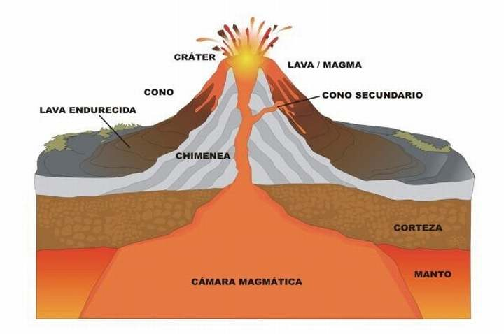
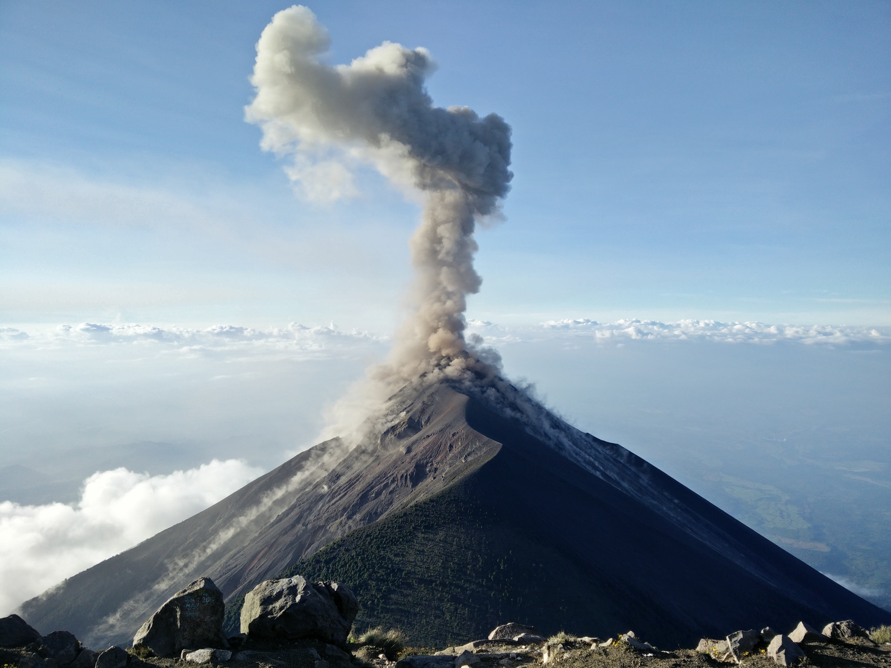

Un volcán es una montaña o cerro que tiene una apertura por la cual pueden escapar materiales gaseosos, líquidos o sólidos desde el interior de la tierra. Un volcán es una fisura de la corteza terrestre sobre la cual se acumula un cono
de materia fundida y sólida que es lanzada a través de la chimenea desde el interior de la Tierra. En la cima de este cono hay una formación cóncava llamada cráter. Cuando se produce actividad en un volcán se dice que el volcán está
en erupción.
Los volcanes por lo general son estructuras compuestas de material fragmentado y corrientes de lava. A través de la chimenea sale la roca fundida que proviene del manto terrestre la cual se le conoce como magma. Una vez el magma sale a
la superficie, pierde los gases que contiene porque se evapora, y al escurrir por las laderas del cono se le conoce como lava. Este cono se va formando por capas solidificadas sucesivas, todas inclinadas hacia el exterior de la chimenea.
Estructura de los volcanes
La cámara magmática es donde está almacenada la roca fundida, que puede provenir de la Astenósfera (100-700 kilómetros, en los límites de placas, dorsales y zonas de subducción) o de la Litósfera (por descompresión de los sólidos se vuelven
líquidos), que forma la lava.

La chimenea es el conducto por donde asciende la lava.
El cráter es la parte del volcán por donde los materiales son arrojados al exterior.

El cono volcánico es la aglomeración de lava y productos fragmentados. También es posible que en las fracturas del cono volcánico o en las erupciones se formen cráteres adventicios que se abren en los flancos o en su base y cuyas chimeneas
secundarias tienen comunicación con la principal.